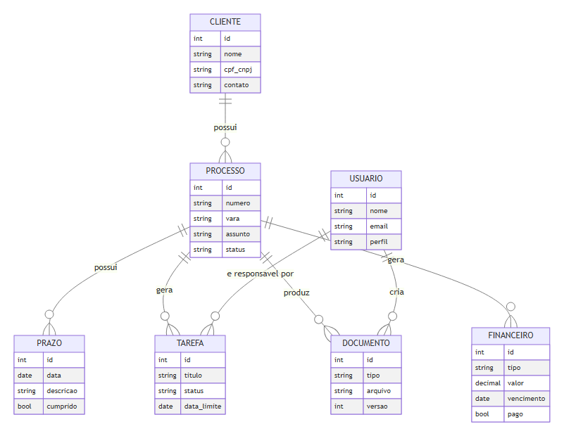
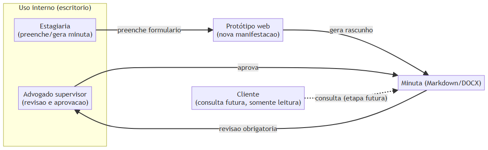

Desenvolver uma automação assistida por advogado para auxiliar na criação de petições simples relacionadas ao cumprimento de prazos processuais. A automação deverá apoiar o trabalho jurídico, mas o conteúdo deverá ser revisado e aprovado por advogado antes de qualquer uso ou protocolo.
A primeira entrega será o layout de um novo site, utilizando como referência as cores do modelo DOCX timbrado do escritório. O arquivo do modelo ainda deverá ser disponibilizado para extração das cores e demais elementos visuais.
O acesso inicial será restrito aos dois advogados.
C:\inetpub\wwwroot.O controle atual de prazos permanece em sistema separado desenvolvido pelo contratante. A integração será especificada posteriormente.
O contratante acredita que o estágio seja obrigatório, mas essa informação deverá ser confirmada com a UTFPR. Foi informada disponibilidade de 6 horas diárias; ainda devem ser confirmados dias, duração, início e condições formais.
O sistema tratará dados pessoais e informações processuais. O contratante conduzirá a análise jurídica de LGPD. No desenvolvimento, serão usados dados fictícios ou anonimizados; textos produzidos por IA serão rascunhos sujeitos à revisão do advogado.
As entidades citadas no item 4 (cliente, processo, prazos) e os perfis do item 3 (advogados) evoluíram, ao longo do estágio, para o modelo de dados e o mapeamento de atores abaixo, documentados em detalhe em docs/modelo-de-dados.md e docs/atores-e-usuarios.md.


Este anexo foi acrescentado após a reunião, para consolidar o raciocínio técnico que partiu das respostas registradas aqui. O perfil "advogado" do diagrama de atores cobre ambos os usuários iniciais listados no item 3.